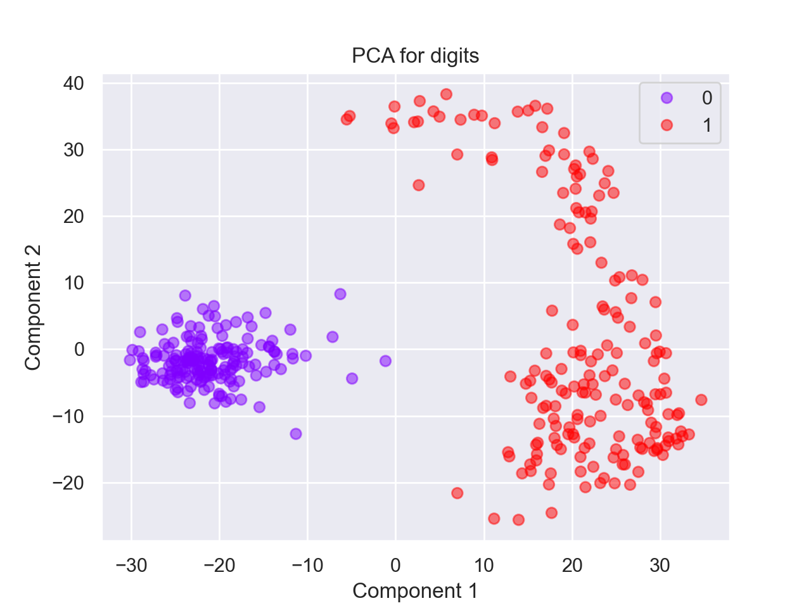
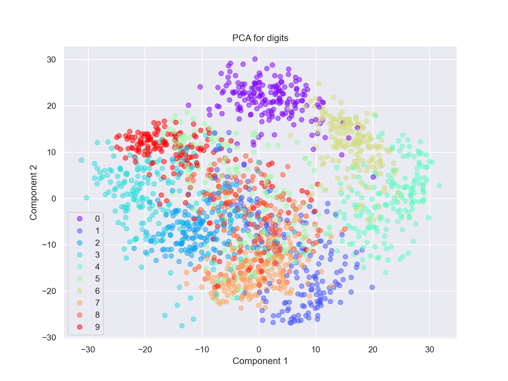
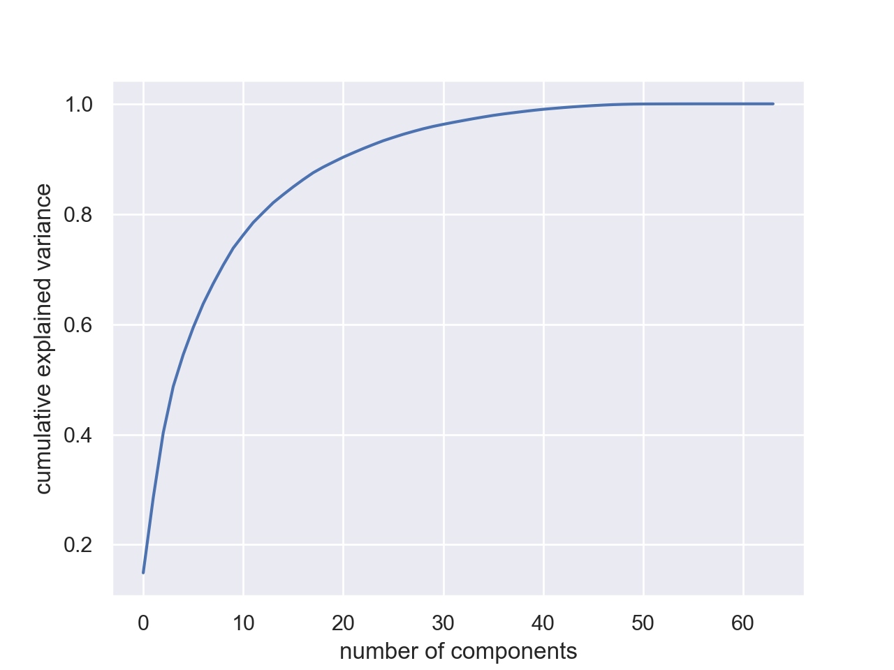
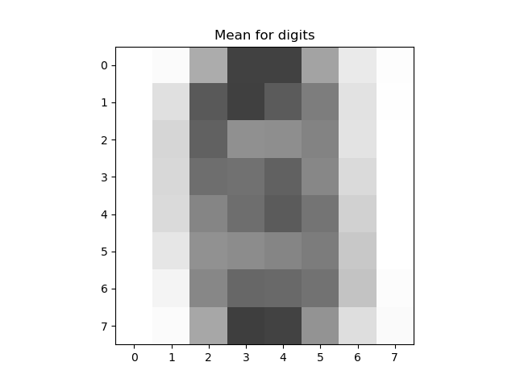
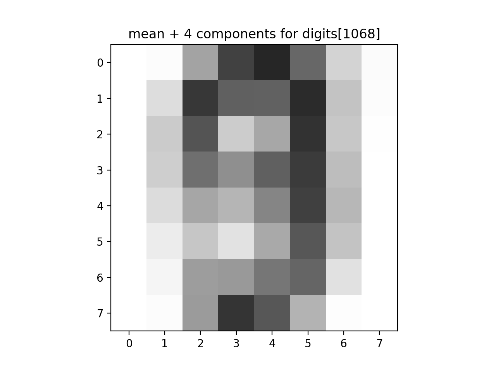
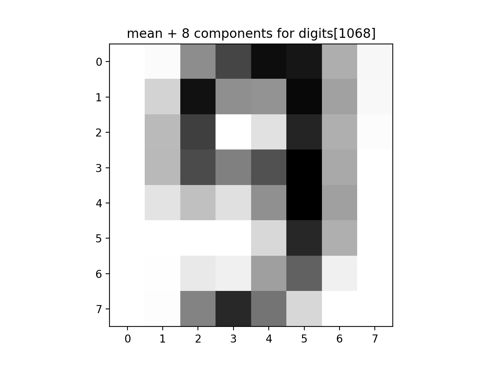
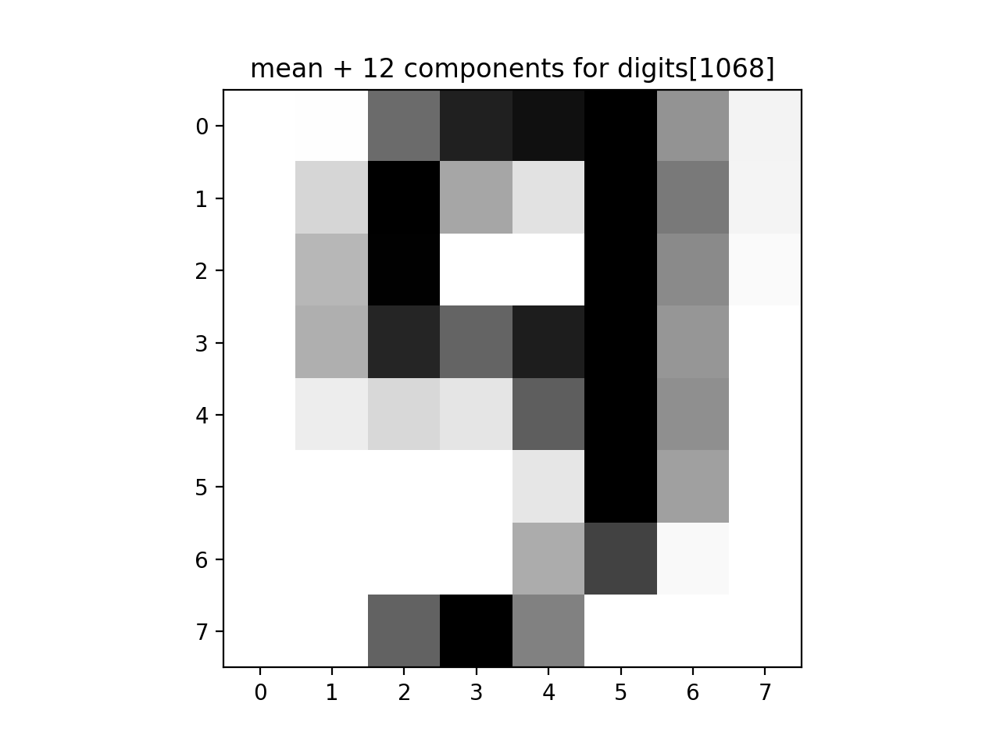

Program 11: Digit Dimensions
CSci 39542: Introduction to Data Science
Department of Computer Science
Hunter College, City University of New York
Spring 2022
Classwork Quizzes Homework Project
Program Description
Program 11: Digit Dimensions. Due noon, Thursday, 29 April.
In Lecture 22 and Chapter 25, we applied Principal Components Analysis as a dimensionality reduction technique and used scree plots to provide a visualization of the captured variance. This assignment continues our analysis of the sklearn digits dataset, focusing on visualization and intrinsic dimenion of the data.
In addition, we will write a function that allows the user to explore how many dimensions are needed to see the underlying structure of images from the sklearn digits dataset (inspired by Python Data Science Handbook: Section 5.9 (PCA)).
As in Program 10, we can view our images as "flattened" 1D arrays of length 64.
As discussed in Python Data Science Handbook: Section 5.9, we can view the images as sums of the components.
If we let
In a similar fashion, we can represent the image in terms of the axis,
In your program, include the following functions from Program 10. You may use your earlier function or the Program 10 solution available on Blackboard:
Learning Objective: to increase facility with standard linear algebra approaches and strengthen understanding of intrinistic dimensions of data sets via exploration of the classic digits dataset).
Available Libraries: pandas, numpy, pickle, sklearn, and core Python 3.6+.
Data Sources: MNIST dataset of hand-written digits, available in sklearn digits dataset.
Sample Datasets: sklearn digits dataset.
x1 = [1 0 ... 0],
x2 = [0 1 0 ... 0], ...,
x64 = [0 ... 0 1] (vectors corresponding to the axis), then we can write our images, im = [i1 i2 ... i64], as: im = x1*i1 + x2*i2 + x3*i3 + ... + x64*i64.
For example, if we take the first entry from the dataset:
We can write it as:
[ 0. 0. 5. 13. 9. 1. 0. 0. 0. 0. 13. 15. 10. 15. 5. 0. 0. 3. 15. 2. 0. 11. 8. 0. 0. 4. 12. 0. 0. 8. 8. 0. 0. 5. 8. 0. 0. 9. 8. 0. 0. 4. 11. 0. 1. 12. 7. 0. 0. 2. 14. 5. 10. 12. 0. 0. 0. 0. 6. 13. 10. 0. 0. 0.]
plugging in the values for a given image (in this case the first image in the dataset) into the equation.
im = x1*i1 + x2*i2 + x3*i3 + ... + x64*i64
= x1*0 + x2*0 + x3*5 + ... + x64*0c1, c2, ... c64, that the PCA analysis returns:
since the axis of PCA are chosen so that the first one captures the most variance, the second the next most, etc. The later axis capture very little variance and likely add litte to the image. For technical reasons, we include the mean (the reason is similar to when we "center" multidimensional data at 0).
This can be very useful for reducing the dimension of the data set, for example, here is the first image from above on the left:
im = mean + c1*i1 + c2*i2 + ... + c64*i64
The next image is the overall mean, and each subsequent image is adding another component to the previous. For this particular scan, the mean plus its first component is enough to see that it's a 0.
And write the following new functions:
select_data(data, target, labels = [0,1]):
This function takes as three input parameters:
Returns the rows of data: a numpy array that
includes rows of equal size flattened arrays,
target a numpy array that contains the labels for each row in data.
labels: the labels from target that the rows to be selected. The default value is [0,1].
data and
target where the value of target is in labels.
run_pca(xes):
This function takes as one input parameter:
It fits a model of sklearn.decomposition.PCA to the
xes: a numpy array that
includes rows of equal size flattened arrays,
xes. The function returns the model and the transformed values.
capture_85(mod):
This function takes as one input parameter:
Using the array of the amount of varianace of each component, mod: a model of sklearn.decomposition.PCA that has been fitted to a dataset.
explained_variance_,
computes the captured variance (see Chapter 26.3.1.1 Captured Variance and Scree Plots).
Returns the number of elements needed to capture more than 85% of the variance.
average_eigenvalue(mod):
This function takes as one input parameter:
For the mod: a model of sklearn.decomposition.PCA that has been fitted to a dataset.
mod,
computes the average of the eigenvalues and returns the number of elements greater than the average. See sklearn.decomposition.PCA for attributes of the model.
approx_digits(mod, img, numComponents=8):
This function has three inputs:
The function transforms the image, mod: a model of sklearn.decomposition.PCA that has been fitted to a dataset.
img: a flattened image from the dataset.
numComponents: the number of components used in the approximation. Expecting a value between 0 and 64. The default value is 8.
img, and uses the resulting coefficents to compute an approximation of the image. The approximation image (flattened array) is the mean plus the sum of the first numComponents
terms (i.e. coefficients[i] * components[i] where the coefficients are returned from the transform and components are an array of the components computed by PCA() analysis).
Note that the mean of the dataset does not have to be computed since it is stored as an attribute of the models of PCA().
Returns the computed approximation image as a flattened array.
Hint: see the discussion in DS Handbook 5.09 (PCA) and in Lecture 21.
Let's run through a few examples. We can start with our binary digits from Program 10:
from sklearn import datasets
digits = datasets.load_digits()
n_samples = len(digits.images)
data = digits.images.reshape((n_samples, -1))
target = digits.target
print(f'The targets for the first 5 entries: {target[:5]}')
bin_dig, bin_tar = select_data(data,digits.target)
print(f'The targets for the first 5 binary entries: {bin_tar[:5]}')pca = PCA().fit(digits.data)
The targets for the first 5 binary entries: (0, 1, 0, 1, 0)Using our function from Program 10, we can select the binary digits and then fit the PCA model to those. Our function returns the model as well as the transformed values:
import matplotlib.pyplot as plt
bin_data,bin_target = select_data(data,target)
bin_mod, bin_proj = run_pca(bin_data)
scatter = plt.scatter(bin_proj[:, 0], bin_proj[:, 1], c=bin_target, alpha=0.5,
cmap=plt.cm.get_cmap('rainbow', 10))
plt.title('PCA for digits')
plt.xlabel('Component 1')
plt.ylabel('Component 2')
plt.legend(*scatter.legend_elements())
plt.show()
We can fit the model to all the digits:
all_mod, all_proj = run_pca(data)
scatter = plt.scatter(all_proj[:, 0], all_proj[:, 1], c=digits.target, alpha=0.5,
cmap=plt.cm.get_cmap('rainbow', 10))
plt.title('PCA for digits')
plt.xlabel('Component 1')
plt.ylabel('Component 2')
plt.legend(*scatter.legend_elements())
plt.show()
Plotting the explained variance ratio of our model:
import numpy as np
plt.plot(np.cumsum(all_mod.explained_variance_ratio_))
plt.xlabel('number of components')
plt.ylabel('cumulative explained variance')
plt.show()

We can use our functions to look at ways to measure this, via the captured variance and average eigenvalues:
np.set_printoptions(suppress=True) #Turn off scientific notation
print(f'The explained variance: {all_mod.explained_variance_}')
print(f'The number of components needed to capture 85% of the variance is {capture_85(all_mod)}.')
print(f'The number of eigenvalues larger than the average is {average_eigenvalue(all_mod)}.')
The explained variance: [179.0069301 163.71774688 141.78843909 101.1003752 69.51316559
59.10852489 51.88453911 44.01510667 40.31099529 37.0117984
28.51904118 27.32116981 21.90148814 21.32435654 17.63672222
16.94686385 15.85138991 15.00446022 12.23447318 10.88685932
10.69356625 9.58259779 9.2264026 8.69036872 8.3656119
7.16577961 6.91973881 6.19295508 5.88499123 5.1558669
4.49129656 4.24687799 4.04743883 3.94340334 3.70647245
3.53165306 3.08457409 2.73780002 2.67210896 2.54170563
2.28298744 1.90724229 1.81716569 1.68996439 1.4019722
1.29221888 1.15893419 0.93122001 0.66985059 0.48606522
0.25235043 0.09915279 0.06313078 0.06073776 0.03966623
0.01495056 0.00847307 0.00362366 0.00127705 0.00066127
0.00041222 0. 0. 0. ]
The number of components needed to capture 85% of the variance is 5.
The number of eigenvalues larger than the average is 14.Lastly, let's look at how many components are needed to recover a given image:
plt.imshow(all_mod.mean_.reshape(8, 8), cmap='binary', interpolation='nearest', clim=(0, 16))
plt.title("Mean for digits")
plt.show()
print(f'The original image: {data[1068]}.')
approx_answer = approx_digits(all_mod, all_proj[1068], numComponents=4)
print(f'The first 4 components: {approx_answer}')
plt.imshow(approx_answer.reshape(8, 8), cmap='binary', interpolation='nearest', clim=(0, 16))
plt.title("mean + 4 components for digits[1068]")
plt.show()
approx_answer = approx_digits(all_mod, all_proj[1068], numComponents=8)
print(f'The first 8 components: {approx_answer}')
plt.imshow(approx_answer.reshape(8, 8), cmap='binary', interpolation='nearest', clim=(0, 16))
plt.title("mean + 8 components for digits[1068]")
plt.show()
approx_answer = approx_digits(all_mod, all_proj[1068], numComponents=12)
print(f'The first 12 components: {approx_answer}')
plt.imshow(approx_answer.reshape(8, 8), cmap='binary', interpolation='nearest', clim=(0, 16))
plt.title("mean + 12 components for digits[1068]")
plt.show()data[1068]:
   